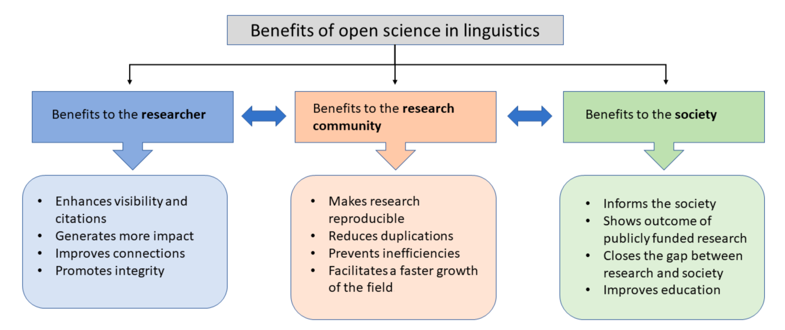

Open data in linguistics has been recently postulated to fuel ethical research practices triggered by the reproducibility crisis in the field. A crisis in research can be defined as a situation in which many research studies cannot be reproduced due to the lack of supporting materials. Although major publishing journals now require access to raw data, this is not unique to linguistics, as it mirrors the reproducibility crisis experienced in fields such as biology or psychology.
Access to raw data and the entire process of decision-making is a need in linguistics, as the ability to trust and construct on previous knowledge is the fundamental tool of research development. In this tutorial, we explain why and how you can do this and become a better researcher.
Why make your data publicly available?
Making data available, as well as the entire decision-making process, is a necessary practice not only to account for variability in results due to the decision making process, but also to inappropriate research techniques, such as HARKing, p-hacking, and selective reporting of positive results. Sharing your data and making it publicly available has a triangular benefit, as it benefits the researcher, the community, and society. Starting with the researcher, it enhances visibility, as it is becoming a growing strength, reduces inefficiencies, improves connections, and, more importantly, makes you, the researcher, gain greater recognition, credibility, validity, and discoverability. Additionally, it benefits the research community, as your data and procedures can be used to form new researchers, reduce unnecessary experiments, improve long-term archiving, and, more significantly, enable replication. Finally, we can inform society by enabling public understanding, promoting science, increasing innovation, and providing the world with easier access to our findings.
Linguistics is still developing a posture regarding open science and data availability. Several initiatives are trying to increase the accessibility of raw data extracted from research studies, incentivizing the voluntary sharing of all materials and procedures used during the research process.
Privately, storing your data over time can be more complicated than you might think. Storage drives can get lost, but if they do not, a hard drive will fail at some point, this is an unavoidable problem associated with the aging of technology.
So, what can you do to protect your linguistic data?
As with everything in life, as a researcher, you can make your data available in several ways and degrees, depending on the focus of your research project. An extended platform is OSF, https://osf.io/, a Web tool designed to help researchers collaboratively manage, store, and share their research process and files related to their research.
Sharing your data publicly also allows the preservation of the data for future reanalysis. Nevertheless, the linguistic field and language study is broad, with plenty of variabilities and degrees. Therefore, a general concern lies in the ability to share data related to human subject participants. To answer this question, you first need to look at your kind of study: is it a lab phonetics study? Is it a sociolinguistics video interview? Is it an eye-tracking study?
While sharing data from phonetics studies is more accessible, as identifiers can be easily removed, other linguistics branches, such as sociolinguistics, which might involve video recordings of the participants, could represent a more significant concern. Some alternatives to make your data publicly available are submitting transcriptions, removing any video components, or signing waivers with participants who took the study. Of course, the ultimate decision must be taken according to the legality and the researcher’s criteria.
As a PI, you should decide what information can make your research more reproducible and share as much information as possible so you, your research community, and society can understand your work more deeply.
To sum up, open data is important in scientific research for several reasons:
- Reproducibility: Open data allows other researchers to access and verify the findings of a study. This is important for ensuring the reproducibility of scientific research.
- Collaboration: Open data allows researchers from different disciplines and institutions to collaborate on research projects. This can lead to new insights and discoveries that might not have been possible otherwise.
- Efficiency: Open data can help to reduce duplication of effort and resources by allowing researchers to build upon the work of others. This can lead to faster and more efficient scientific progress.
- Transparency: Open data promotes transparency in scientific research by allowing others to see the raw data behind the conclusions of a study. This can help to reduce the potential for bias or fraud.
- Innovation: Open data can lead to new and unexpected discoveries by allowing researchers to explore data sets in new ways or apply new techniques to existing data.
Overall, open data can help to improve the quality and impact of scientific research by promoting transparency, collaboration, and innovation.
Citation
BibTeX citation:
@online{andreu rascón2023,
author = {Andreu Rascón, Ivan and Chang, Isabelle},
title = {Open Data},
date = {2023-03-21},
url = {https://FOSIL-project.github.io/open-data/index.html},
langid = {en}
}
For attribution, please cite this work as:
Andreu Rascón, Ivan, and Isabelle Chang. 2023. “Open Data.”
FOSIL. March 21, 2023. https://FOSIL-project.github.io/open-data/index.html.